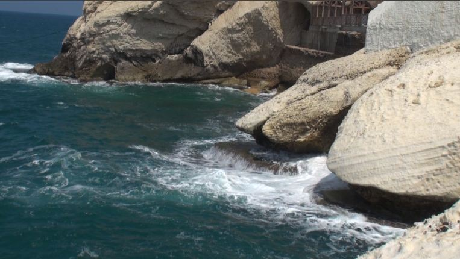
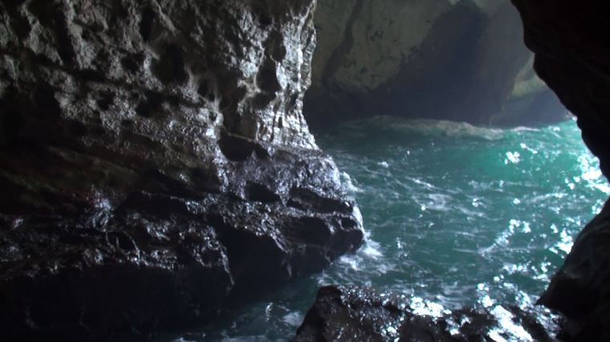
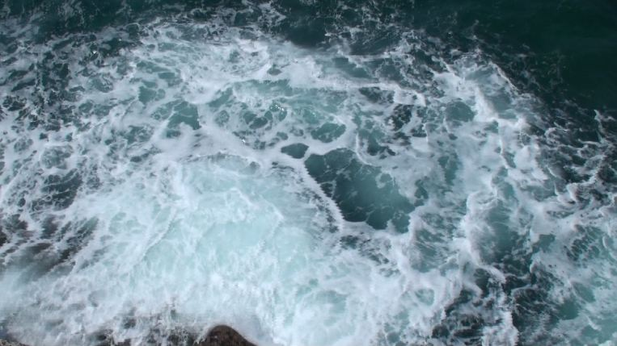

"В НАЧАЛЕ БЫЛО СЛОВО". Анна Пчелинцева
"Поэзия, на мой взгляд, немного проигрывает, если она не звучит".
На этот раз моим собеседником является поэт, радио-журналист и детский писатель Анна Пчелинцева.
.
АННА: Поэзия, на мой взгляд, немного проигрывает, если она не звучит. Звучащее, слышимое слово - такая же неотрывная часть поэзии как произведения искусства, как например, краски у живописи или звук у музыки. И мне очень жаль, что мы часто воспринимаем стихотворение и вообще литературу как нечто написанное, и только.
Это, как если бы, наверное, мы были все очень музыкально грамотные и приходили бы на концерт, и нам бы выдавали такие томики с клавиром или симфонией, согласно купленным билетам. И мы бы просто пролистывали их и наслаждались.



Господь СКАЗАЛ. Вначале было СЛОВО. Неся в себе Всевышнего мечту, Вдруг, ворвалось Оно, торжественно и ново, Как воздух заполняет пустоту, Стремительно заполнило собою Всё, отбирая у небытия Светила, звёзды, небо голубое, И всё, что суть есть ты и суть есть я, Границы и устав давая водам, Распространяя ввысь вершины гор, Давая счёт мгновениям и годам, И судеб наших вычертив узор.
Какое счастье – вдруг подумать снова, Что прежде всех, в начале было Слово.
Анна Пчелинцева